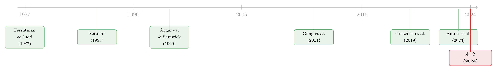

把「合谋」写进高管的工资条：当反垄断的门悄悄关上
本文读的是 Ha, Ma & Žaldokas (2024, Journal of Financial Economics)：2013 年美国司法部关掉四个地区反垄断办公室，让一批公司「被监管的概率」突然下降；作者发现，正是这批公司随后把 CEO 的薪酬，更紧地绑到了「本地竞争对手」的业绩上——奖励经理去配合对手，而不是打败对手。一份看似普通的薪酬合同，被设计成了合谋的发动机。
1 一个让人不太舒服的问题
我们习惯这样讲公司治理的故事：股东和经理之间存在利益冲突，于是要用薪酬合同把经理的激励「掰正」，让他替股东卖力，最终把公司价值做大。教科书里，这是一个皆大欢喜的过程——治理越好，激励越对齐，公司越值钱。
但这篇论文偏要往这个故事里塞一根刺：如果股东想要的那个「公司价值最大化」，恰恰是建立在损害消费者、损害竞争之上的呢？
具体说，产业组织(industrial organization)的文献早就告诉我们，在某些条件下，和产品市场上的对手「合谋」(collusion)——一起抬价、一起克制产量——对股东是有利可图的。问题是，经理人未必愿意干这件事。原因很现实：在美国，价格操纵、串标、瓜分市场这类横向协议(horizontal agreement)一旦被定罪，经理个人是要吃刑事指控、甚至坐牢的。公司可以替他付罚款，却没法替他去坐牢。再加上职业声誉、被同行戳脊梁骨的顾虑，经理人对合谋的「内在厌恶」往往比匿名的边际股东更强。
于是张力就出现了：股东想合谋，经理不想。这恰恰是一个标准的委托—代理缺口。而填补这个缺口的工具，正是薪酬合同。
这篇文章问的就是这样一个让人不太舒服的问题：当合谋对股东变得更划算时，董事会（代表股东）会不会重新设计高管薪酬，把经理推向合谋？而且——关键是——做得足够隐蔽，让股东和董事自己都能保有「我可没让他去合谋」的可推诿性(plausible deniability)？
2 一扇关上的门：司法部撤掉了四个办公室
要回答这个问题，作者需要一个外生的冲击：某些公司「被抓的概率」突然下降，另一些没有。这样才能比较二者薪酬设计的变化。
他们找到的事件是这样的。2013 年，美国司法部(Department of Justice, DoJ)反垄断局出于预算削减的考虑，关掉了七个地区办公室中的四个——克利夫兰、达拉斯、亚特兰大、费城。这些被关掉的办公室，原本的核心职责之一，就是搜集本地产品市场上的合谋线索、处理本地的刑事反垄断案件。剩下的案子，大部分被搬去了华盛顿总部，司法部从此更聚焦于全国性的大案。
这里有两个细节让这个事件特别干净。
首先，它纯粹来自预算，而不是因为哪个行业、哪些公司突然变得更值得监管——也就是说，这扇门的关上，对单个公司的经营环境而言基本是外生的。
接着，一个自然的问题是：门关了，监管真的变弱了吗？作者拿出了一组很有说服力的「前置证据」。他们按州统计违反《谢尔曼法》(Sherman Act)的刑事指控数量，发现 2013 年之后，受影响州的反垄断起诉急剧下降，而不受影响的州没有这种趋势。更要命的是，下降几乎完全由本地案件驱动：受影响州里，本地案件占全部起诉的比例从改革前的 0.26 掉到改革后的 0.16；而不受影响的州，这个比例反而从 0.24 升到了 0.30。
这正好对上了逻辑——被搬到华盛顿的，是那些跨州、跨国的大案；真正「失了监护」的，是地方上的小规模合谋。门关上的，恰恰是盯着本地市场的那只眼睛。
3 识别策略：用「距离」当处理强度
但真正关键的一步，在于怎么把「受影响」量化。
作者没有简单地把公司分成「处理组/对照组」两堆。他们的理由很诚实：哪怕一家公司离被裁办公室稍微远了一点，它可能仍然离另一个仍在运转的办公室很近，监管照样严密。处理与否之间，没有一条干净的分界线。
于是他们采用了一个连续处理变量(continuous treatment)的双重差分(difference-in-differences, DiD)设计：用公司总部到其「管辖反垄断办公室」之间的距离变化 ΔDistance 来度量暴露程度。识别假设是——地理距离是反垄断稽查强度的代理：距离越远，监管的信息摩擦越大、稽查越难。这个「距离即监管强度」的代理思路，并非他们首创，在银行监管、SEC 监管的研究里早有先例（如 Kedia and Rajgopal (2011)、Lim et al. (2017)、Gopalan et al. (2021)）。
合谋这件事还有个微妙之处加固了这个代理：反垄断的宽大处理(leniency)往往要求卡特尔成员主动去举报同伙。而公司更愿意把这种敏感信息交给一个地理上更近、更熟悉的办公室。门一关，连「想反水」的渠道都变远了——合谋因此更稳、更安全。
ΔDistance 在全样本里的均值（中位数）是 170.9（0）英里；而在那些距离确实增加了的公司里，均值（中位数）高达 513.8（394.1）英里。换句话说，多数公司没受影响（中位数为 0），但受影响的那一批，距离的变化相当可观。
4 一份合同如何「奖励合谋」：相对业绩评价的反转
现在到了全文的核心机关。股东要怎么用薪酬「悄悄」鼓励合谋，又不留把柄？答案藏在一个看似中性的治理工具里——相对业绩评价(relative performance evaluation, RPE)。
RPE 的标准逻辑是这样的：经理的努力没法直接观测，而行业里有很多共同冲击（油价、需求、汇率）不该由经理负责。于是把经理的薪酬和同行业绩挂钩、再剔除掉，让他只为「跑赢同行」的那部分拿钱——这能过滤掉共同噪声，是 Holmström (1979, 1982)、Nalebuff and Stiglitz (1983) 奠定的经典思想。
注意这意味着什么：在标准 RPE 下，CEO 的薪酬对同行业绩的载荷是负的——同行表现越好，你的相对位置越差，你拿得越少。这恰恰激励 CEO 去狠狠竞争，因为打垮对手能直接抬高自己的相对排名和薪酬。
但 Aggarwal and Samwick (1999a) 指出了一个反转：当产业里产品是策略互补(strategic complements)时，最优合同会在自家和同行业绩上都放正权重。直觉是——如果让 CEO 为「同行也赚钱」而高兴，他就没有动力去压价抢市场了，竞争自然就软了下来。Joh (1999) 在日本也发现，当政府刻意压制过度竞争时，高管薪酬变得和同行业绩正相关。
于是这篇论文的预测顺理成章：当反垄断执法变弱、合谋对股东变得更划算时，董事会会把 CEO 薪酬对本地同行业绩的载荷，从「负」往「正」推。这就是「motivate collusion」的全部机巧——不需要任何一句「去合谋」的明示，只要把工资条上那个系数的符号悄悄调一调。
把这个思想写成回归，大致是下面这种设定（这里给出其精神，正式设定见原文）：
5 数据
样本是 2008–2017 年的美国上市公司，焦点在 CEO。为什么是 CEO？因为正如 Harrington (2006) 所述，卡特尔的决策通常由最高管理层拍板，以保证组织各层级的协调，而高管的激励会层层「渗透」到中层。
- 高管薪酬来自
Execucomp（总薪酬、现金薪酬、股权薪酬）； - 业绩基准与归属(vesting)条款来自
Incentive Lab； - 股票收益来自
CRSP，财务数据来自Compustat； - 产品市场同行的定义采用 Hoberg and Phillips (2016) 的文本相似度网络——「本地同行」指总部在 200 英里以内、且产品相似度在前 70% 的公司；
- 已定罪卡特尔案件来自 Connor (2014)，州级经济统计来自人口普查局，历史总部地址来自 SEC 文件。
观测单位是公司—年，主回归样本约 10,181 个公司—年观测。
6 主要结果
核心结果干净利落。对于总部靠近被关办公室的公司，CEO 薪酬对本地竞争对手业绩的敏感度，在改革后变得更正了。
量级上：距离每增加 100 英里，敏感度的加权平均因果响应是 0.018；而作为参照，不受影响的公司在改革前的敏感度是 -0.053（也就是标准 RPE 那个「负载荷」）。0.018 对 -0.053——这不是一个零头，它意味着改革把相当一部分「奖励竞争」的激励，扭转成了「容忍/奖励对手赚钱」的激励。
接着，一个很能说明问题的细节是：现金薪酬的效应强于股权薪酬。这符合直觉——现金激励（年度奖金计划里的业绩指标）更灵活、能更快地随合同环境的变化而调整，而股权归属慢、调起来费劲。如果合谋是被「主动设计」进合同的，那就应该先从最容易拧的那个旋钮开始拧。
7 是股东的意志，还是经理的偷懒？
到这里，一个尖锐的质疑会冒出来：薪酬变了，会不会不是股东在「设计合谋」，而仅仅是软弱的董事会被强势 CEO 拿捏、放任经理为自己谋利（managerial entrenchment）？
这是全文我最欣赏的一处反转。作者直接拿治理质量来做检验：如果是经理在「俘获董事会」，那么治理越差的公司效应应该越强；如果是股东在主动追求价值，那么治理越好的公司效应应该越强。
结果是后者——效应在治理更好的公司里更强。这把「经理偷懒」的解释挡了回去，强烈指向：这是股东价值最大化驱动的、有意识的合同设计。换句话说，治理越「好」，越能高效地把经理推向一桩损害消费者的勾当。这是一个让人脊背发凉的反转，也是本文最重要的一记重拳。
一系列横截面检验都和「合谋」这个机制严丝合缝：效应在策略互补的行业更强，在集中度更高的行业更强（人少更好串谋），在本地经营更集中的公司更强（最受本地监管松动影响），在临近退休的 CEO 那里更强（短视、偏好不同），在高管劳动力市场更灵活、声誉顾虑更重的地方更强，也在上市公司占比更高的行业更强（同行业绩能从股价里读出来）。每一条都不是装饰，而是机制的指纹。
8 真的有人合谋吗？
薪酬变了，不等于真合谋了。作者用「果」来反推「因」：合谋若真发生，应该体现在经营成果上。
结果是：改革后，受影响公司的毛利率(gross profit margin)显著高于不受影响的公司；而且这块「多出来的利润楔子」恰恰集中在那些薪酬设计对改革反应最强烈的行业里——薪酬旋钮拧得越狠的地方，利润抬得越多。与此呼应，这些公司的股票收益在改革后和本地同行共动(comovement)得更厉害了，说明经营业绩变得更同步。这正是反竞争效应该有的样子。
还有一处对合谋「不稳定性」的精巧处理。合谋天生脆弱——任何一个短视的玩家都可能为了眼前的暴利而背叛、转而激进竞争。要稳住合谋，股东就该拉长经理的激励期限，压住这种短视冲动。作者果然发现，受影响公司给 CEO 的股权归属期(vesting horizon)被显著延长了。一个旋钮调符号（奖励配合），另一个旋钮调期限（压住背叛）——两手都指向同一个目标。
9 文献脉络
把这篇论文放回它生长的那条藤上，故事会更清楚。
最早，是一支偏理论的产业组织文献在问：薪酬合同能不能成为产品市场上的战略武器？Fershtman and Judd (1987) 与 Sklivas (1987) 证明，给经理一个强力的奖金方案，能换来策略上的优势；Reitman (1993) 则指出股票期权能对对手构成「威胁」，反而抬高股东利润。这条线确立了一个观念——激励结构会塑造企业在产品市场上的互动。
接着，相对业绩评价这条线从委托—代理理论里长出来。Holmström (1979, 1982)、Nalebuff and Stiglitz (1983) 奠定了「按相对业绩付酬」的逻辑；而 Aggarwal and Samwick (1999a) 给出了那个关键反转——策略互补下，最优合同会在同行业绩上放正权重，从而软化竞争。Vrettos (2013) 确认了这一点，Joh (1999) 在日本找到了政府压制竞争时薪酬转为正相关的证据，Gong et al. (2011) 则刻画了它在不同集中度行业的异质性。

再往后，实证的接力棒交到了「合谋与薪酬」这条更窄的线上。在已定罪卡特尔的样本里，González et al. (2019) 和 Bloomfield et al. (2023) 发现卡特尔公司高管的薪酬结构确有不同。与此并行的还有共同所有权这条线——Antón et al. (2023) 发现，当共同所有权更高、股东偏好更软的竞争时，CEO 拿到的激励更弱。
而这篇论文的位置就清楚了：前人要么停在理论，要么只能在「已经被抓」的卡特尔里做横截面比较——而「被抓」本身就是选择性的。Ha, Ma 和 Žaldokas 的贡献，是抓住一个降低合谋成本的外生政策冲击，第一次把「为了合谋而调整薪酬」这件事，从相关性推到了因果。它告诉我们：合谋的诱因不只是市场结构，连一纸薪酬合同的系数符号，都会随执法的松紧而摆动。（关于市场里那种「公开却隐蔽」的协同，可参见《给「绿色」贴个标签，到底值多少钱？——ESG 贷款里那场公开的合谋》。）
10 评论与延伸（Q&A + 研究方向）
(a) 几个可能的疑问
Q：这跟普通的相对业绩评价(RPE)到底差在哪？为什么 RPE 反而成了合谋的工具？
普通 RPE 的载荷是负的：奖励你跑赢同行，逼你去竞争。本文讲的是这个载荷被推向正——奖励你和同行一起赚钱，于是你失去了抢市场的动力。同一个工具，符号一翻，从「逼竞争」变成「促合谋」。妙就妙在它形式上仍是合法、中性的薪酬条款，给了股东和董事可推诿性。
Q：用「到办公室的距离」代表执法强度，会不会太粗？万一是别的东西在变？
这是最该担心的地方。作者的防线有两层：一是事件本身来自预算削减、对单个公司外生；二是用反垄断起诉数据做前置验证——受影响州的本地案件起诉确实塌了下去（本地案件占比
0.26→0.16），而非受影响州没有。距离这个代理因此不是空想，而是有执法量数据背书的。
Q：治理更好的公司效应更强，这不反直觉吗？好治理不该约束坏行为吗？
恰恰相反，这是本文的点睛之笔。好治理意味着董事会忠实地执行股东意志。如果股东要的就是合谋带来的利润，那么治理越好，这台机器跑得越顺。它揭示了一个政策困境：对齐股东与经理的激励是「好治理」的金科玉律，但当股东的目标损害消费者时，好治理反而成了帮凶。
Q：0.018 这个系数，看着很小，到底大不大？
要和基准比。不受影响公司改革前的敏感度是
-0.053，而距离每增 100 英里带来+0.018的响应——对暴露较深（距离变化常达数百英里）的公司，足以把那个负载荷显著地往正里拉，甚至接近抹平。它不是统计上的零头，而是激励方向的实质性扭转。
Q：薪酬变了就等于合谋了吗？会不会公司根本没合谋？
作者没有止步于薪酬。他们用经营结果反推：受影响公司改革后毛利率更高，且这块超额利润集中在薪酬反应最强的行业；股票收益与本地同行共动加剧。再加上归属期被拉长以压住背叛——多条独立证据都指向真实发生的反竞争行为，而非单纯的合同变动。
Q：这和共同所有权(common ownership)压低竞争是一回事吗？
机制不同。共同所有权（如 Antón et al. (2023)）靠的是同一批股东持有竞争对手、从而给更弱的激励；本文不需要交叉持股，靠的是执法成本下降让单个公司的股东主动去调整合同。前者是「谁持股」，后者是「抓不抓得到」。两条路殊途同归，都通向更软的竞争。
(b) 几个可能的研究问题与提案
1. 债权人会「motivate collusion」吗？
【经济故事】股东偏好高利润，债权人偏好稳定的现金流。合谋抬高利润率、降低经营波动，恰恰能压低违约风险——理论上债权人比股东更欢迎合谋。那么执法变松后，受影响公司的债券契约(covenant)、信用利差、评级会不会也出现一致的调整？ 【可行性】中。所需数据：
Mergent FISD（债券发行与条款）、TRACE（利差）、配合本文的ΔDistance。识别可直接沿用本文的连续处理 DiD。难点在于把「合谋预期」从一般的盈利改善里分离出来。
2. 外资机构持有人是抑制还是放任合谋？
【经济故事】外资持有人往往是分散的、声誉与跨境反垄断敞口不同的投资者，对本地合谋的「内在动机」可能更弱（或反而更强，取决于其母国的执法文化）。改革后，外资持股高的公司薪酬反转得更慢还是更快？这能把「谁在背后推合谋」这件事，细化到投资者构成的层面。 【可行性】中。所需数据：
FactSet/13F机构持股、按国别拆分的外资持股。识别用本文 DiD 加持股结构的三重交互。挑战是外资持股的内生性。
3. 合谋预期如何传导到公司债的流动性？
【经济故事】若改革让一批公司的现金流更稳、信息更同步（收益共动上升），它们债券的逆向选择风险下降，做市商更愿意持有——利差与流动性可能改善。这把「产品市场合谋」和「信用市场流动性」接到了一起，是我自己最想做的方向。 【可行性】中。数据：TRACE 的成交与买卖价差、
ΔDistance。识别清楚，难在排除同期利润改善的混淆，需要靠横截面（策略互补、集中度）来锁定合谋这一特定渠道。
4. 把已定罪卡特尔与执法冲击拼起来做事件研究。
【经济故事】González et al. (2019) 看的是「已被抓」的卡特尔，选择性强。能不能用本文的执法松动事件，预测哪些公司随后更可能被发现合谋，再回看它们改革前后的薪酬反转，做一个「薪酬信号 → 合谋暴露」的预测性检验？ 【可行性】中偏低。数据：Connor (2014) 卡特尔案件 +
Incentive Lab。难点是卡特尔暴露样本小、且本身被执法松动压低了，存在「越松越查不到」的悖论。
我的判断
这篇论文最大的贡献，是把一个长期停留在理论和「事后被抓样本」里的命题——薪酬合同可以是合谋的工具——用一个干净的外生冲击推到了因果层面，并且用「治理越好、效应越强」这一记反直觉的检验，漂亮地排除了经理偷懒的替代解释。它对公司治理的常识构成了一种不安的提醒：激励对齐本身是价值中立的，对齐到一个损害消费者的目标上，它就成了反竞争的引擎。
对识别，我有两点保留。其一，「距离即执法强度」这个代理虽有起诉数据背书，但距离同时也和无数本地经济变量相关（劳动力市场、需求冲击、政治环境），固定效应未必吸得干净——我会更想看到围绕 2013 年的动态效应/平行趋势图，确认薪酬敏感度的反转确实始于改革当年，而非之前就在漂移。其二，连续处理 DiD 的「加权平均因果响应」对处理强度分布的设定较敏感，二元化处理的稳健性（论文 3.3.1 节有做）值得更重的笔墨。
后续我最想看到的，是把这条逻辑接到信用市场：如果合谋真的稳住了现金流，债权人理应是受益者，那债券定价、契约、乃至外资债权人的反应，会不会留下同样清晰的指纹？这正是把「产品市场的合谋」和「金融市场的价格」缝合起来的好地方。
参考文献
- Aggarwal, R. K., & Samwick, A. A. (1999a). Executive compensation, strategic competition, and relative performance evaluation: Theory and evidence. Journal of Finance 54(6), 1999–2043.
- Antón, M., Ederer, F., Giné, M., & Schmalz, M. (2023). Common ownership, competition, and top management incentives. Journal of Political Economy 131(5), 1294–1355.
- Bloomfield, M., Marvão, C., & Spagnolo, G. (2023). Relative performance evaluation, sabotage and collusion. Journal of Accounting and Economics.
- Connor, J. M. (2014). Price-fixing overcharges: Revised 3rd edition. Working paper.
- Fershtman, C., & Judd, K. L. (1987). Equilibrium incentives in oligopoly. American Economic Review 77(5), 927–940.
- Gong, G., Li, L. Y., & Shin, J. Y. (2011). Relative performance evaluation and related peer groups in executive compensation contracts. Accounting Review 86(3), 1007–1043.
- González, T. A., Schmid, M., & Yermack, D. (2019). Does price fixing benefit corporate managers? Management Science 65(10), 4813–4840.
- Harrington, J. E. (2006). How do cartels operate? Foundations and Trends in Microeconomics 2(1), 1–105.
- Hoberg, G., & Phillips, G. (2016). Text-based network industries and endogenous product differentiation. Journal of Political Economy 124(5), 1423–1465.
- Holmström, B. (1979). Moral hazard and observability. Bell Journal of Economics 10(1), 74–91.
- Holmström, B. (1982). Moral hazard in teams. Bell Journal of Economics 13(2), 324–340.
- Joh, S. W. (1999). Strategic managerial incentive compensation in Japan: Relative performance evaluation and product market collusion. Review of Economics and Statistics 81(2), 303–313.
- Nalebuff, B. J., & Stiglitz, J. E. (1983). Prizes and incentives: Towards a general theory of compensation and competition. Bell Journal of Economics 14(1), 21–43.
- Reitman, D. (1993). Stock options and the strategic use of managerial incentives. American Economic Review 83(3), 513–524.
- Sklivas, S. D. (1987). The strategic choice of managerial incentives. RAND Journal of Economics 18(3), 452–458.
- Vrettos, D. (2013). Are relative performance measures in CEO incentive contracts used for risk reduction and/or for strategic interaction? Accounting Review 88(6), 2179–2212.
- Ha, S., Ma, F., & Žaldokas, A. (2024). Motivating collusion. Journal of Financial Economics 154, 103798.